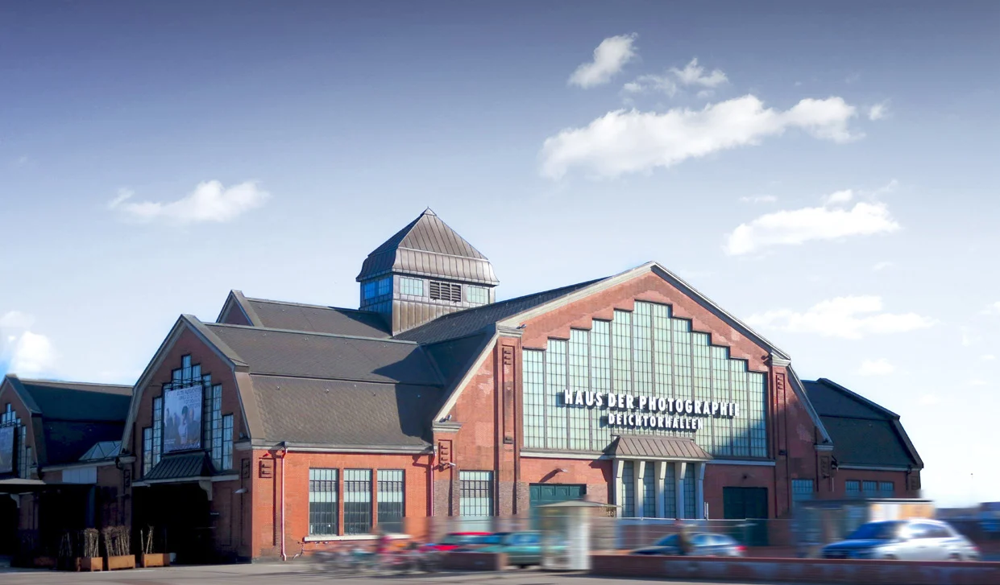
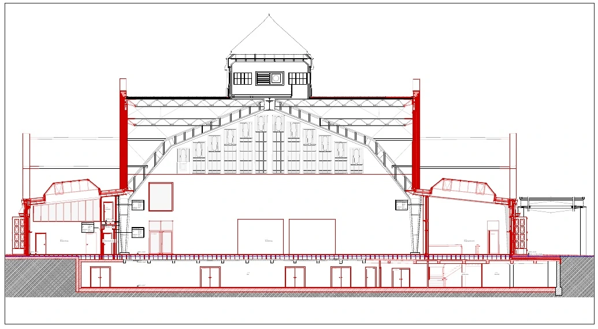
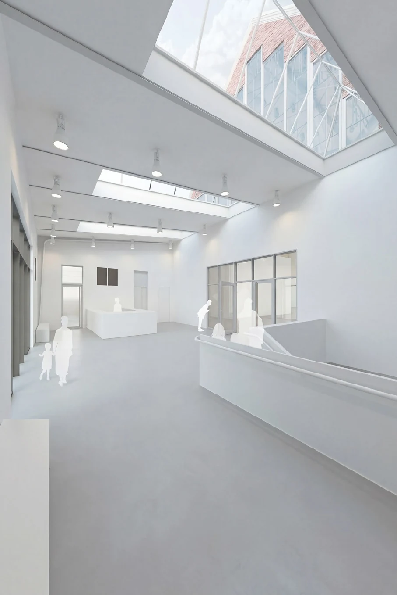

Berufspraxis · Sanierung eines Baudenkmals
Haus der Photographie
Bei der Sanierung der denkmalgeschützten Deichtorhallen werden Ausstellungsflächen, Lager und Nebenräume des Fotomuseums innerhalb der historischen Industriehalle neu organisiert.

- Ort
- Deichtorhallen, Hamburg
- Büro
- Krekeler Architekten
- Rolle
- Praktikant · Ausführungsplanung (LP 5)
Die Zeichnung
Der Querschnitt zeigt, wie sich die Museumsräume in das Volumen der historischen Halle einfügen.

Zeichnung vergrößernDer Raum
Der Entwurf des Ausstellungsraums lässt die Höhe der Industriehalle und den Einfall des Tageslichts erlebbar.
